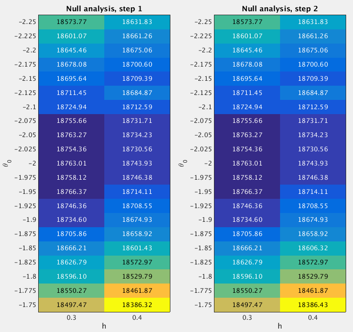

2.2 GSEA Round 2
Last updated: 2017-04-12
Code version: 165dd72eeaecde46dbd09f1ee0d64c1b665f38fb
2.2.1 Fit the null model
From the Round 1 null analysis (Section 2.1), I found that almost 100% posterior mass is concentrated on the setting (h=0.3, theta0=-2). In Round 2, I used a finer grid. Specifically, I used the grids theta0=(-2.25:0.025:-1.75)' and h=(0.3:0.1:0.4)' when fitting the null model. I estimated the (unnormalized) log importance weights (“pseudo-likelihoods”) for all 42 sets of (h,theta0) under null.

After normalizing the log “pseudo-likelihoods” (logw.step*) to posterior probabilities (posp.step*), we can see that almost 100% posterior mass is concentrated on the settings h=0.3 and theta0=(-2.075:0.025:-1.925)'.
h.index <- as.character(null.df$h) %in% as.character(0.3)
theta0.index <- as.character(null.df$theta0[h.index]) %in% as.character(seq(-2.075,-1.925,by=0.025))
sum(null.df$posp.step2[theta0.index]) ## [1] 12.2.2 Fit the enrichment model
To perform GSEA, I set h=0.3 and theta0=(-2.075:0.025:-1.925)', since the null analysis suggests that almost 100% posterior mass is placed on these settings. For the log-fold enrichment parameter, I use the grid theta = (0:0.01:1)'. The following table lists the GSEA results.